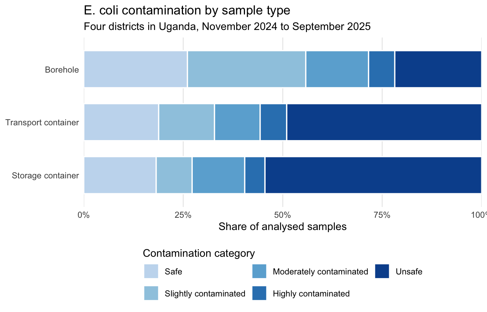

The goal of waterqualityuganda is to provide the data of a monthly monitoring of drinking water quality along the chain from borehole sources to household storage in four Ugandan districts (Nakaseke in Central Region, Kaabong in Karamoja, Kumi in Teso and Luuka in Busoga), collected between November 2024 and September 2025 by Whave Solutions Limited.
For each borehole, water was sampled at the source and, in three households using that borehole, from the container used to carry water home (usually a jerrycan) and from the drinking water storage container. Samples were analysed for E. coli by membrane filtration of 100 mL and incubation for 18 to 24 hours. The aim of the monitoring was to find out where contamination occurs: at the source, during transport or during storage.
Installation
You can install the development version of waterqualityuganda from GitHub with:
# install.packages("devtools")
devtools::install_github("openwashdata/waterqualityuganda")
## Run the following code in console if you don't have the packages
## install.packages(c("dplyr", "knitr", "readr", "stringr", "gt", "kableExtra"))
library(dplyr)
library(knitr)
library(readr)
library(stringr)
library(gt)
library(kableExtra)Alternatively, you can download the individual datasets as a CSV or XLSX file from the table below.
- Click Download CSV. A window opens that displays the CSV in your browser.
- Right-click anywhere inside the window and select “Save Page As…”.
- Save the file in a folder of your choice.
| dataset | CSV | XLSX |
|---|---|---|
| borehole_visits | Download CSV | Download XLSX |
| household_visits | Download CSV | Download XLSX |
| labblanks | Download CSV | Download XLSX |
| samples | Download CSV | Download XLSX |
Data
The package provides access to four datasets, one per observational unit:
-
borehole_visits: one row per field visit to a borehole source. -
household_visits: one row per field visit to a household, with the containers and water handling practices of that household. -
samples: one row per water sample (bottle), with its laboratory result. -
labblanks: one row per laboratory blank, the sterile-water control run alongside the samples.
samples$visit_id links each sample to the visit it was collected at. The two visit tables share one id space, so a visit_id occurs in exactly one of them: in borehole_visits for samples of type borehole and borehole_duplicate, and in household_visits for samples of type transport_container and storage_container.
borehole_visits
The dataset borehole_visits contains the location of each visited borehole and a community member’s remarks on the taste, smell and colour of its water. It has 477 observations and 9 variables.
borehole_visits |>
head(3) |>
gt::gt() |>
gt::as_raw_html()| visit_id | date_sampled | region | district | community | source_name | water_taste | water_smell | water_colour |
|---|---|---|---|---|---|---|---|---|
For an overview of the variable names, see the following table.
| variable_name | variable_type | description |
|---|---|---|
| visit_id | integer | Unique identifier of the field visit (one survey submission). Integer, assigned over all field visits sorted by district, date and submission time, so no id occurs in both borehole_visits and household_visits. Key for the visit_id column of samples. |
| date_sampled | Date | Date of the field visit and of sample collection (YYYY-MM-DD). |
| region | character | Region of Uganda where the visit took place: Central Region, Karamoja Region, Teso Region or Busoga Region. |
| district | character | District where the visit took place: Nakaseke (Central), Kaabong (Karamoja), Kumi (Teso) or Luuka (Busoga). |
| community | character | Name of the community (village, parish or trading centre) where the visit took place, as entered by the enumerator and converted to title case. |
| source_name | character | Name of the borehole sampled. Spelling variants were merged within each district; NA where the entry was not a source name. |
| water_taste | character | Remark by a community member on the taste of the borehole water (free text; whitespace, case and obvious typos normalised, no semantic recoding). |
| water_smell | character | Remark by a community member on the smell of the borehole water (free text; whitespace, case and obvious typos normalised, no semantic recoding). |
| water_colour | character | Description of the colour of the sampled borehole water (free text; whitespace, case and obvious typos normalised, no semantic recoding). |
household_visits
The dataset household_visits contains, for each visited household, the borehole it collects water from, the types of transport and storage container, how long water stays in the transport container, whether the household boils its drinking water and how often and how it cleans both containers. It has 1118 observations and 14 variables.
household_visits |>
head(3) |>
gt::gt() |>
gt::as_raw_html()| visit_id | date_sampled | region | district | community | source_name | storage_container | transport_container | days_in_transport_container | boils_water | storage_cleaning_days | transport_cleaning_days | storage_cleaning_method | transport_cleaning_method |
|---|---|---|---|---|---|---|---|---|---|---|---|---|---|
For an overview of the variable names, see the following table.
| variable_name | variable_type | description |
|---|---|---|
| visit_id | integer | Unique identifier of the field visit (one survey submission). Integer, assigned over all field visits sorted by district, date and submission time, so no id occurs in both borehole_visits and household_visits. Key for the visit_id column of samples. |
| date_sampled | Date | Date of the field visit and of sample collection (YYYY-MM-DD). |
| region | character | Region of Uganda where the visit took place: Central Region, Karamoja Region, Teso Region or Busoga Region. |
| district | character | District where the visit took place: Nakaseke (Central), Kaabong (Karamoja), Kumi (Teso) or Luuka (Busoga). |
| community | character | Name of the community (village, parish or trading centre) where the visit took place, as entered by the enumerator and converted to title case. |
| source_name | character | Name of the borehole from which the household collects its drinking water. Spelling variants were merged within each district; NA where the entry was not a source name. |
| storage_container | character | Type of container in which the household stores its drinking water: Pot, Sauce pan, Jerry can, Drum or Bucket. ‘Other (please specify)’ answers were recoded from the specified text. |
| transport_container | character | Type of container used by the household to collect water from the borehole: Jerry can, Bucket, Quad, Watering can, Water bottle or Jerrycan and watering can. ‘Other’ answers were replaced by the specified text. |
| days_in_transport_container | numeric | Number of days the household keeps water in the transport container before transferring it to the storage container, as reported by the household. |
| boils_water | logical | Whether the household boils its drinking water (TRUE/FALSE). |
| storage_cleaning_days | numeric | Reported interval between cleanings of the drinking water storage container. The form asked ‘how often do they clean their storage device’ and accepted a number; values are interpreted as days (7 = weekly, 30 = monthly). A negative entry was set to NA. |
| transport_cleaning_days | numeric | Reported interval between cleanings of the transport container. The form asked ‘how often do they clean their transportation device’ and accepted a number; values are interpreted as days (7 = weekly, 30 = monthly). |
| storage_cleaning_method | character | Free-text description by the household of how the storage container is cleaned (materials used, e.g. soap and water, sand, polythene bag). |
| transport_cleaning_method | character | Free-text description by the household of how the transport container is cleaned (materials used, e.g. steel wire, soap and water, gravel). |
samples
The dataset samples contains one row per bottle of water: where and when it was collected, what it was taken from, and the E. coli count of the laboratory analysis together with the derived contamination category. It has 3203 observations and 16 variables.
samples |>
head(3) |>
gt::gt() |>
gt::as_raw_html()| sample_id | visit_id | region | district | date_sampled | sample_type | bottle_number | date_incubation | date_result | petri_dish_number | ecoli_cfu | tntc | volume_ml | contamination_category | lab_notes | match_status |
|---|---|---|---|---|---|---|---|---|---|---|---|---|---|---|---|
For an overview of the variable names, see the following table.
| variable_name | variable_type | description |
|---|---|---|
| sample_id | integer | Unique identifier of the water sample (one bottle). Integer. |
| visit_id | integer | Identifier of the field visit during which the sample was collected. Links to the visit_id column of borehole_visits for sample_type ‘borehole’ and ‘borehole_duplicate’, and of household_visits for ‘transport_container’ and ‘storage_container’. NA when a laboratory result could not be linked to a field record (see match_status). |
| region | character | Region of Uganda where the sample was collected: Central Region, Karamoja Region, Teso Region or Busoga Region. |
| district | character | District where the sample was collected: Nakaseke, Kaabong, Kumi or Luuka. The laboratory form used the spellings ‘Kaboong’ and ‘Kamuli’ for the last two; these were harmonised to the field survey spelling. |
| date_sampled | Date | Date the sample was collected (YYYY-MM-DD). For laboratory results without a field record this is the incubation start date, which in this study is the sampling date. |
| sample_type | character | What was sampled: ‘borehole’ (water from the borehole outlet), ‘borehole_duplicate’ (second bottle from the same borehole taken for quality assurance), ‘transport_container’ (water from the container used to carry water from the borehole to the household), ‘storage_container’ (water from the household drinking water storage container). NA when the laboratory result has no field record. |
| bottle_number | integer | Number written on the sample bottle in the field and read by the laboratory. Numbering restarts every sampling day, so it identifies a sample only together with district and date_sampled. |
| date_incubation | Date | Date on which the sample was filtered (membrane filtration) and incubation started. NA when no laboratory result is linked. |
| date_result | Date | Date on which the colonies were counted and the laboratory form was submitted, normally the day after date_incubation (18-24 h incubation). NA when no laboratory result is linked. |
| petri_dish_number | character | Petri dish label used by the laboratory for this sample, as recorded. Some entries are placeholder values (e.g. 88888). NA when no laboratory result is linked. |
| ecoli_cfu | numeric | Number of E. coli colonies (colony forming units) counted on the membrane filter after incubating volume_ml of sample. The laboratory was instructed to enter 101 when more than 100 colonies were present (too numerous to count); a few values above 101 were recorded as typed. NA when no laboratory result is linked. |
| tntc | logical | TRUE when ecoli_cfu is greater than 100, meaning the plate was too numerous to count and ecoli_cfu is a censored value rather than an exact count. NA when no laboratory result is linked. |
| volume_ml | numeric | Volume of sample water filtered, in millilitres. 100 mL for every analysed sample except one, where ‘Other’ was selected without a value (NA). NA when no laboratory result is linked. |
| contamination_category | c(“ordered”, “factor”) | Contamination level derived from ecoli_cfu with the thresholds used in the project: Safe (0), Slightly contaminated (1-10), Moderately contaminated (11-50), Highly contaminated (51-100), Unsafe (more than 100). Ordered factor. NA when no laboratory result is linked. |
| lab_notes | character | Free-text notes written by the laboratory technician about the sample (e.g. field blank, duplicate sample, visible maggots, interrupted incubation). |
| match_status | character | How the field record and the laboratory result were linked on district, date and bottle number: ‘matched’ (exactly one field bottle and one laboratory result share the key), ‘no lab result’ (field bottle without a laboratory result), ‘no field record’ (laboratory result without a field record), ‘ambiguous key’ (the key occurs more than once in the field or the laboratory data, so the rows were deliberately not linked and remain separate). |
labblanks
The dataset labblanks contains the laboratory blanks: sterile water filtered and incubated in the same laboratory session as the field samples, to detect contamination introduced by the laboratory procedure itself. It has 134 observations and 7 variables.
labblanks |>
head(3) |>
gt::gt() |>
gt::as_raw_html()| blank_id | date_incubation | date_result | region | district | petri_dish_number | ecoli_cfu |
|---|---|---|---|---|---|---|
For an overview of the variable names, see the following table.
| variable_name | variable_type | description |
|---|---|---|
| blank_id | integer | Unique identifier of the laboratory blank. Integer. |
| date_incubation | Date | Date on which the blank was filtered and incubation started. |
| date_result | Date | Date on which the colonies on the blank were counted and the laboratory form was submitted. |
| region | character | Region of Uganda whose samples were analysed in the same laboratory session as the blank: Central Region, Karamoja Region, Teso Region or Busoga Region. |
| district | character | District whose samples were analysed in the same laboratory session as the blank: Nakaseke, Kaabong, Kumi or Luuka. |
| petri_dish_number | character | Petri dish label of the blank as written by the laboratory technician (e.g. ‘B1’, ‘12’). |
| ecoli_cfu | numeric | Number of E. coli colonies counted on the blank filter (sterile water processed like a sample, 100 mL). 0 indicates no contamination introduced by the laboratory procedure; 101 means more than 100 colonies (too numerous to count). |
Example
Where along the chain from source to cup does drinking water become contaminated? The plot below shows, for each type of sample, the share of analysed samples in each contamination category. Borehole water is mostly safe or slightly contaminated, while the majority of samples from transport and storage containers are unsafe.
library(waterqualityuganda)
library(dplyr)
library(ggplot2)
sample_type_labels <- c(
borehole = "Borehole",
transport_container = "Transport container",
storage_container = "Storage container"
)
samples |>
filter(sample_type %in% names(sample_type_labels),
!is.na(contamination_category)) |>
count(sample_type, contamination_category) |>
mutate(sample_type = factor(sample_type_labels[sample_type],
levels = rev(sample_type_labels))) |>
ggplot(aes(x = n, y = sample_type, fill = contamination_category)) +
geom_col(position = position_fill(reverse = TRUE), colour = "white",
linewidth = 0.6, width = 0.7) +
scale_x_continuous(labels = scales::label_percent(),
expand = expansion(0)) +
scale_fill_manual(
values = c("#c6dbef", "#9ecae1", "#6baed6", "#3182bd", "#08519c")
) +
guides(fill = guide_legend(nrow = 2)) +
labs(x = "Share of analysed samples", y = NULL,
fill = "Contamination category",
title = "E. coli contamination by sample type",
subtitle = "Four districts in Uganda, November 2024 to September 2025") +
theme_minimal() +
theme(panel.grid.major.y = element_blank(),
panel.grid.minor = element_blank(),
legend.position = "bottom",
legend.title.position = "top")
To relate results to household practices, join samples to household_visits on visit_id. For example, the share of unsafe storage-container samples by whether the household boils its drinking water:
samples |>
filter(sample_type == "storage_container",
!is.na(contamination_category)) |>
left_join(household_visits, by = "visit_id") |>
group_by(boils_water) |>
summarise(
n_samples = n(),
share_unsafe = mean(contamination_category == "Unsafe")
)
#> # A tibble: 2 × 3
#> boils_water n_samples share_unsafe
#> <lgl> <int> <dbl>
#> 1 FALSE 580 0.628
#> 2 TRUE 305 0.387Notes on the data
-
Matching of field and laboratory records. The field survey and the laboratory survey were linked on district, date and bottle number. Bottle numbers restart every sampling day, and the same number was sometimes used twice on one day. Records were linked only when the key was unique on both sides; the column
match_statusinsamplesreports the outcome for every row, and rows that could not be linked are kept with missing values on the other side. -
Counts above 100. The laboratory was instructed to record 101 colonies when a plate had more than 100 colonies (too numerous to count). A few counts above 101 were recorded as typed. The logical column
tntcmarks all counts above 100; treatecoli_cfuas censored for those rows. - District names. The laboratory form used the spellings “Kaboong” and “Kamuli” for the districts recorded as “Kaabong” and “Luuka” in the field survey. The field survey spelling is used throughout.
- Dropped rows. Submissions before 1 November 2024 (pilot visits without region or survey type) and four laboratory results that were submitted twice were dropped.
License
Data are available as CC-BY.
Citation
Please cite this package using:
citation("waterqualityuganda")
#> To cite package 'waterqualityuganda' in publications use:
#>
#> Nansiimbi C, Clavijo Daza A (2026). "waterqualityuganda: Drinking
#> Water Quality from Boreholes to Household Storage in Uganda."
#> <https://github.com/openwashdata/waterqualityuganda>.
#>
#> A BibTeX entry for LaTeX users is
#>
#> @Misc{nansiimbi_etall:2026,
#> title = {waterqualityuganda: Drinking Water Quality from Boreholes to Household Storage in Uganda},
#> author = {Cecilia Nansiimbi and Adriana {Clavijo Daza}},
#> year = {2026},
#> url = {https://github.com/openwashdata/waterqualityuganda},
#> abstract = {Monthly E. coli monitoring of drinking water along the chain from borehole sources to household storage in four Ugandan districts (Nakaseke, Kaabong, Kumi and Luuka) between November 2024 and September 2025. For each borehole, water was sampled at the source and, in three households using it, from the container used to carry water home and from the drinking water storage container. Samples were analysed by membrane filtration and classified into five contamination levels. The package provides four tidy datasets: field visits to boreholes, field visits to households, water samples with their laboratory results, and laboratory blanks.},
#> keywords = {water quality,E. coli,boreholes,household water storage,water transport,WASH,Uganda},
#> version = {0.0.0.9000},
#> }